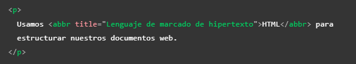
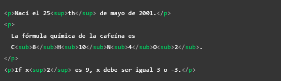
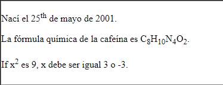
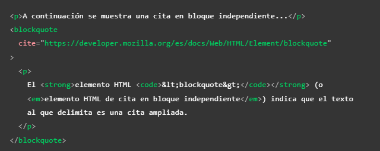
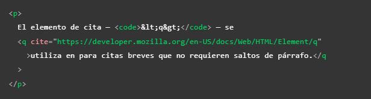

Etiquetas de texto
Este apartado se trata de todas aquellas atiquetas cuya función consiste en modificar o ajustar la forma en la que se visualizara el texto de un elemento.
Abbr
-
Se trata de una etiqueta para definir las abreviaturas, su efecto es que la abreviatura o el acronimo se mostrara con un subrayado puntuado, y al posicionar el raton sobre este se mostrara un texto emergente con la expresión completa del termino, para definir la expresión completa se utiliza el atributo "title", seguido de la expresión.
 B
-
Su función unicamnte es la de mostrar el texro que se encuentre dentro de esta etiqueta en negritas, no añade ningun valor semantico a este.
Em
-
Se usa para dar un poco de énfasis o relevancia a algun texto, el texto dentro de esta biñeta se muestra en cursiva.
I
-
Consiste en una etiqueta para mostrar el texto en cursiva o italica, no brinda ningun valor semantico.
Span
-
Tal y com se menciono en el apartado de etiquetas de estructura se trata de una etiqueta no semantica de texto, por lo tanto su función es incorporarlo en el interior de un texto para hacer posible distinguir algun area del texto sin añadirle algun valor semantico. Esto se puede lograr usando el atributo "class" para poder incorporar css.
Nota: por si mismo el navegador no muestra algun estilo en particular al texto que se encuentre en este elemto.
Superíndice y Subíndice
-
En ocaciones puede ser necesario incorporar estos elemtos en algun texto, para ello existen estas dos etiquetas:
sup: Esta etiqueta se usa para el definir el superíndice, lo hace encacillando a esté en su interior
- sub: Esta etiqueta se usa para definir el subíndice, lo hace encacillando a este en su nterior
Un ejemplo de ambos casos es el siguiente
Codigo
visualización
 Strong
-
Se usa para darle gran importancia al texto dentro de esta biñeta, se muestra como texto en negritas.
U
-
Su función unicamnte es la de mostrar el texro que se encuentre dentro de este subrayado, no añade ningun valor semantico a este.
Etiquetas para Citar Contenido
Una peculiaridad de HTML es que entre tantos elementos tambien existen algunos con la función en espesifico de estructurar las citas de texto de forma adecuada, en base al tipo de cita se emple un elemento diferente segun el caso.
Citas en bloque independiente
-
Para estos casos de utiliza el elemento <blockquote>, el cual debe encasillar una etiqueta "p" con la cita, esta se mostrara como un parrafo con sangria a la izquierda y derecha, tambien es importante utilizar el atributo "cite=' ' """, en este se puede ingresar una URL que apunte a la fuente de la cita.
Ejemplo
Nota: Este tipo de cita indica que es una cita ampleada.
Citas en Linea
-
Estas funcionana igual que las citas en bloque, con la diferencia de que se utiliza la biñeta "q", la cual se incorporan dentro del elemento "p", encasillando unicamnte las palabras deceadas, el resultado será que la cita se mostrara entre comillas.
Nota: Estas indican que se trata de nua cita brebe que no necesita de un salto de linea.
Incorporar la Fuente de la Paguina
-
El atributo "cite" parece util pero los buscadores o motores de lectura no hacen nada con el, por lo tanto la mejor forma de incorporar a la fuente en la paguina es utilizando un enlace(a), para esto simlemente incorporamos este elemto en la redacción de forma que el enunciado o el tipo de cita lo permita, con el URL que diriga a la fuente deseada.